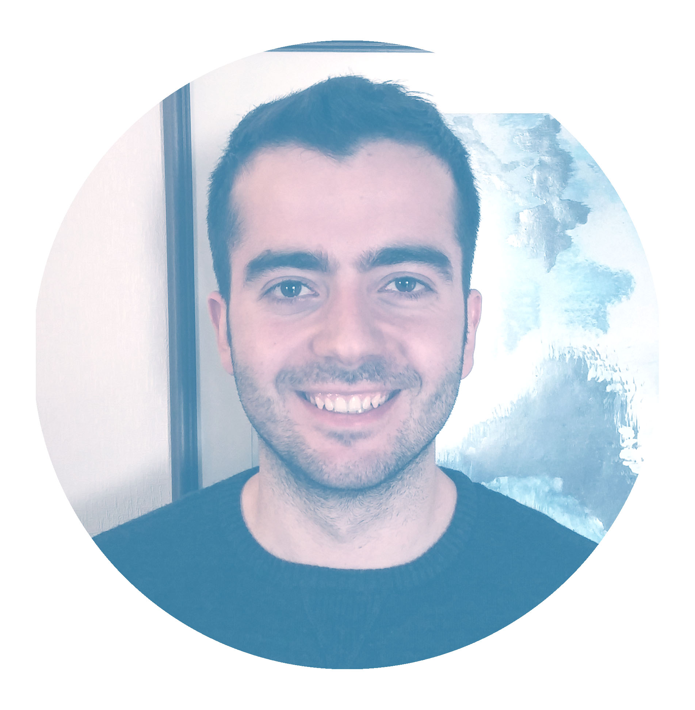

Hi, my name is Orçun and I obtained Bachelor of Architecture from METU (Middle East Technical University) in Turkey. I am currently studying International MSc in Sustainable and Resilient Architecture at KU Leuven (Sint-Lucas in Ghent, Belgium). I hope as you look through this website you can get a better understanding of my works and my approach to architecture. Hopefully, you will also find some inspiration. Feel free to contact me!